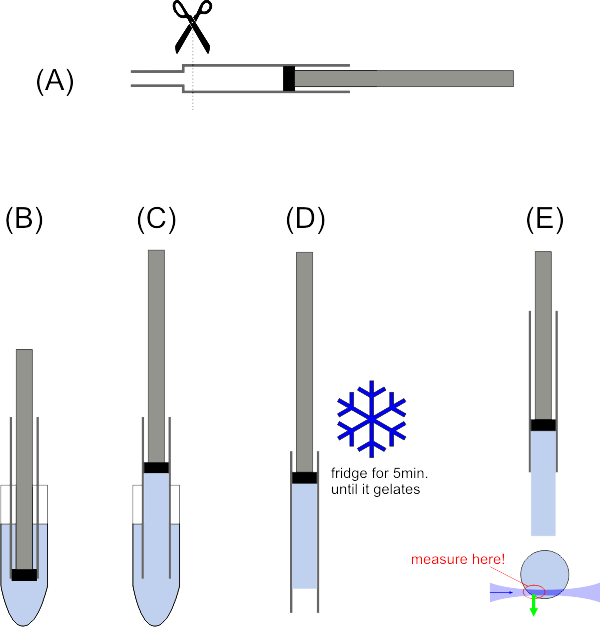

Matlab-Script for DualView beadscans
This script allows to evalue a beadscan, as typically done in a
SPIM microscope to characterize the PSF (and possibly the alignment of a
DualView optics).
Measurement
Pepare a gel containing a low concentration of sub-diffractive beads. We use:
- Prepare a few 1ml syringes by cutting off the top, where the syringe gets thinner (see image (A) below).
- 0.5% PhytaGel (P8169, Sigma-Aldrich) mixed with deionized water (shake thoroughly). Then heat in the microwave until the gellant dissolves completely.
We use 40ml water and 200µg PhytaGel.
- Add MgSO4 to an end concentration of 0.1%
We use 400µl of a 10% MgSO4 stock solution.
- While still >40°C, fill 1 ml of the solution into an Epi and add 5-10µl of 100nm TetraSpec beads (T-7279 from Invitrogen)
directly from stock. Vortex shortly. You can also use any other type of
bead, as long as the concentration is so low, that the beads are well
separated in the gel!
- pull up ~300-400µl from one Epi into a syringe (see image (C-D)) and refrigerate for 5min. at 4°C until the gel solidifies
- Measure a beadscan with 1000-2000 frames, displaced by ~200nm.
Take care to measure in the front part of the gel, so it does not alter
the optical properties of the microscope too much!

preparation of gel for beadscan
Evaluation
The matlab script that can be downloaded below, will do the
following (all Gaussian widths are measured as 1/e² half width, i.e.
exp(-2*x²/w²), a new subdirectory is created that stores all the
results!):
- it runs through the stack and finds separated beads (in the left color channel on a DualView).
- around each bead it cuts a certain Rregion of interest (ROI)
- to 1D-cuts along the x-, y- and z-axis through the brightest pixel in the ROI, it fits 1D-Gaussian functions.
- along the z-axis it fits to several x- and y-cuts a separate 1D-Gaussian, to see how they extend away from the focal point
- a 3D-Gaussian fit is performed
- An image of the fits of every showeveryNthSinglebeadPlot-th bead is saved as .fig and .pdf file
- Histograms of all fit results (histogrammed over all fitted beads) are saved as .fig and .pdf files:
- *_sub1_.psfhistogram.pdf/fig for 1D-fit histograms
- (*_sub2_.psfhistogram.pdf/fig for 1D-fit histograms from DualView rhs)
- *_sub1_.psfhistogram3D.pdf/fig for 3D-fit histograms
- (*_sub2_.psfhistogram3D.pdf/fig for 3D-fit histograms from DualView rhs)
- *_sub1_.psfhistogram_xzcol.pdf/fig for 1D-fits along z-axis histograms
- (*_sub2_.psfhistogram_xzcol.pdf/fig for 1D-fit along z-axis histograms from DualView rhs)
- Histograms, comparing the two color channels are created, if the DualView mode was selected:
- *_dualcolor_comparewidpos.pdf/fig compares the 1D fit results
- (*_ldualcolor_pos.pdf/fig shows correlations on the 1D-fit data
In order to run the data evaluation, follow these steps:
- Download the script package and unzip it somewhere on your harddisk, e.g. D:\Matlab\spim.
- copy the DualView template or single template to the directory of the image stack and open it in the MatLab editor.
- at the top, set in addpath('D:\Matlab\spim'); the path (here D:\Matlab\spim) to the path where you saved the scripts (see step 1)
- set the variable datafile to the filesname of your stack, e.g. datafile = 'stack.tif';
- set the variable deltaz to the step-size of your beadscan in nanometers, e.g. deltaz=200; for 200nm steps.
- set the variable deltaxy to the pixel-size of your beadscan in nanometers, e.g. deltaxy=400; for 400nm pixelsize (=24µm camera pixels @ 60x magnification).
- set the variable datarange=[] to evaluate all z-setps or e.g. datarange=1:500 to evaluate only the first 500 frames.
- set the variable datarangeX=[] and datarangeY=[] to evaluate all pixels, or e.g. datarangeX=32:96; datarangeY=32:96; to evaluate only the central 64x64 pixels of a 128x128 camera.
- set any of the other variables, if you want to.
- run the script
You can also download an example bead stack farther down, which comes with example output data!
Download & License
See also